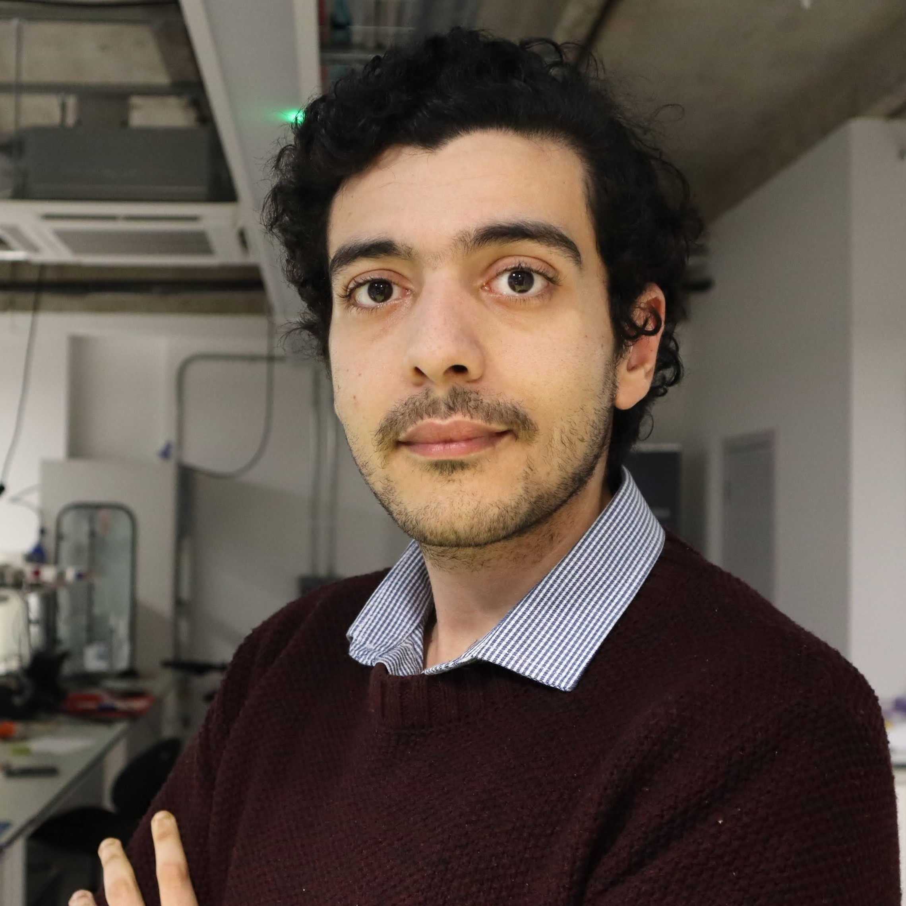
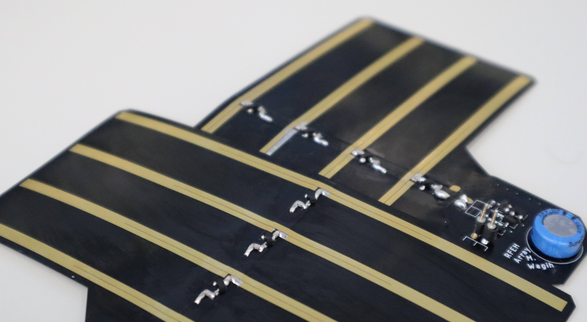
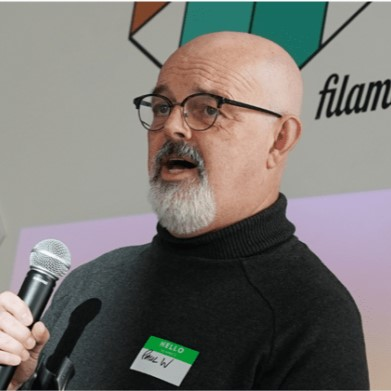
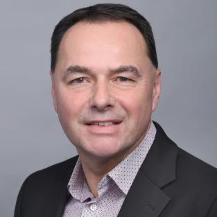

Mahmoud Wagih
Founder and CEO
mahmoud@rxwatt.com
RX Watt is a University of Glasgow spin-out building battery-free sensing platforms for real operating environments.
RX Watt grew from award-winning research on wireless RF power, sensing, and low-power electronics at the University of Glasgow.
The spin-out journey was supported by Octopus Ventures Springboard, University of Glasgow, Silicon Catalyst ChipStart, STAC Accelerator, and Innovate UK.
The goal is simple: advance wireless-powered sensing from demonstrations to reliable deployment.

Founder and CEO
mahmoud@rxwatt.comAdvisor
martin.bradley@rxwatt.com
Advisor
paul.winstanley@rxwatt.com
Head of Business Development
andrew.bickley@rxwatt.comHead of Product and Technology
iain.warner@rxwatt.comAdvisor
LinkedInDirector